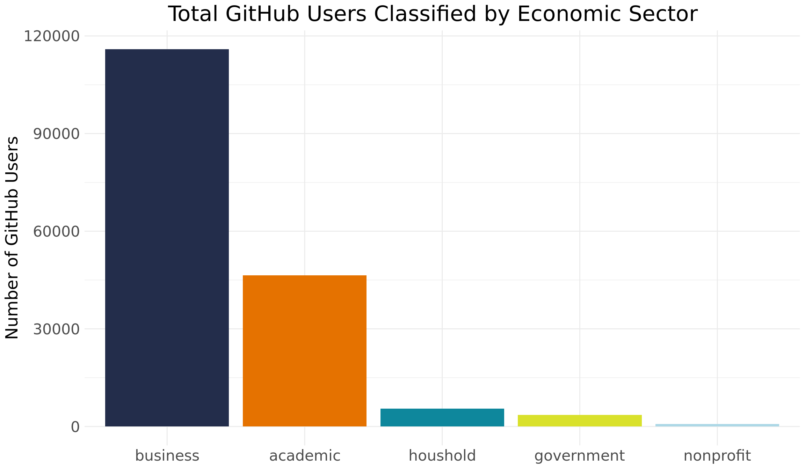
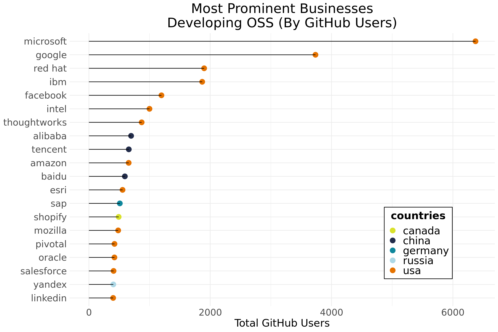

Classifing Users Across Sectors & OSS in the Business Sector
This page focuses on classifying GitHub users across all sectors and the business domain.
Python R text analysis/regex matchingGeneral Approach
To assign users into the business sector, we took an exclusionary approach that depends on the other four sectors. First, we worked to standardize the affiliation column by removing (1) all website domain information using manually curated terms originally based on DataHub's Domain Entries, (2) all legal entity nomenclature based on manually curated version of Gleif's legal entity abbreviations, and (3) a list of commonly occurring arbitrary symbols. After these procedures were applied, we removed (a) all users classified into the academic, government, non-profit or household sectors and (b) all users that did not list an institution that was mentioned in the affiliation column more than five times. This critical threshold of 5 is arbitrary but helps us to establish some degree of commonality among those in the business sector. Furthermore, while this exclusionary approach is less than ideal, classifying GitHub users into the business sector is complicated by the absence of a publicly available data source that comprehensively lists all businesses around the world. While we present the results at the top half of this page, the most valuable aspects of this sector come from the experimental text analysis process we detail in the second half of the page.
Sectoring Results

Our original GHTorrent data contained ~2.1 million users. Of these total users, only 578,852 (or 27%) had valid email information while only 422,517 (or 19.7%) had valid affiliation information. Working from this subset, we were able to classify 46,403 users into the academic sector, 5,455 users into the household sector, 3,576 users into the government sector and 823 users into the non-profit sector. After removing users that provided an organization that was listed fewer than five times, this left us with around 116,000 users that we allocated to the business sector.
How valid are these results? So far, we feel most confident in our sectoring of academic results. This is because academics seemed to use more formalized modes of entry in the affiliation data and because we had the Hipo Labs data to "ground truth" our matching approach. The government, household, and non-profit sectors created major challenges because users vary quite a bit in what they put in their self-report data. We have allocated considerably less time to those domains to date, which means we will likely see some improvements in the coming months. Of course, the business sectoring is the most difficult of these domains - largely because we do not have a good list of businesses around the world to match entries against. We had to make several assumptions in our sectoring approach, but these preliminary results have opened a number of future approaches that we can explore. In fact, we have documented some of the more experimental strategies we are toying with toward the end of this page.
Top Businesses Developing Open Source Software

Who are the top businesses developing OSS on GitHub? In a sense, the answers are not surprising, as they align with some of major tech companies around the world. Those based in the US include Microsoft, Google, Red Hat, IBM and Facebook while Chinese (Alibaba, Tencent and Baidu), German (SAP), Canadian (Shoplify), and Russian (Yandex) companies are all represented in the top-20. One remarkable thing that stuck out about these companies was how many of them are based in California. Like we saw in the academic sector, the major tech hub of Silicon Valley has had a huge impact on OSS production. While these findings are interesting, our future work will need to assess how collaboration tendencies impact production output. In this sense, we can learn more about how the structure of collaboration may outweigh total users or the production of raw code.
Detailed Classification Process in Python
As part of our overarching strategy for assigning users to specific sectors, we need to be able to assign users to business as well. Given the specifics of our source dataset (GHTorrent), we can reasonably assume that the more frequently that a company name appears, the more "authoratative" (reflective of a consensus) of a representation of that company name it is. Once we've removed the user entries that correspond to the non-business sectors, we can be reasonably confident in mapping users whose worplace affiliation listing is shared with some critical threshold of other users (i.e. 5) to the business sector.
In contrast to the rest of the team using R, we used Python to carry out the classification process in the business sector. Using a set of functions developed by Daniel Bullock, we pulled data from our PostgreSQL database to pull GitHub user data. In these tables, academic, governnment and nonprofit users were already codified, which helped to remove around 45,000 users. In order to perform a full sectoring we also need the information for household and null values. We classified (or removed) those users by drawing from source keylists for household and null values. After we derived the list of users which have yet to be assigned, we cleaned their input in the company column in preperation for subsequent processing. We cleaned these entries for substrings related to legal entities, web domains, and extraneous symbols as described in another notebook and quantatively profiled in another.
For more details on the experimental approach we took in the business sector, see our GitHub page.